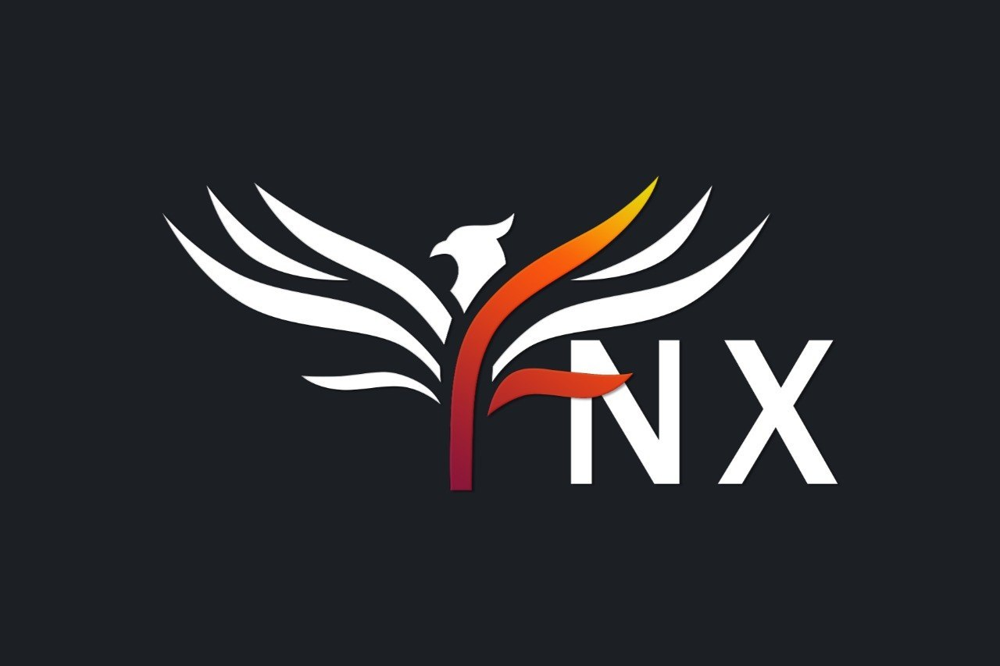

FNX. A mudança começa em você.
Antes de transformar processos, precisamos nos reconectar com aquilo que dá sentido às nossas escolhas.
O FNX é uma metodologia experiencial da Educasoul que convida profissionais e equipes a refletirem sobre seu propósito, reconhecerem suas potencialidades e assumirem uma postura mais consciente e protagonista diante dos desafios.
Por meio de experiências, reflexões e atividades práticas, o FNX mobiliza pessoas para a mudança, fortalecendo a conexão entre propósito, liderança e atitude.

Toda transformação começa de dentro para fora.
Em meio às demandas, responsabilidades e desafios cotidianos, é comum que profissionais se distanciem dos motivos que os levaram a escolher seus caminhos.
O FNX nasceu para promover essa reconexão.
Inspirado no simbolismo da fênix, o método propõe uma experiência de aprendizagem que integra autoconhecimento, inteligência emocional, liderança e reflexão sobre a gestão do tempo, das pessoas e dos processos.
Mais do que sensibilizar, o FNX provoca uma mudança de perspectiva: reconhecer que transformar uma realidade exige consciência, escolhas e atitudes.
Propósito e identidade
Reconexão com os valores, escolhas e motivações que dão sentido à atuação profissional.
Autoconhecimento e relações
Reflexão sobre emoções, comportamentos, relações interpessoais e responsabilidades compartilhadas.
Liderança e gestão
Consciência sobre a atuação na gestão do tempo, das pessoas e dos processos.
Atitude e transformação
Mobilização para assumir compromissos e transformar reflexões em ações intencionais.
Uma experiência. Diferentes possibilidades de transformação.
O FNX pode ser vivenciado em diferentes formatos, conforme os objetivos, o público e as necessidades de cada instituição.
FNX EXPRESS | 2 HORAS
Uma experiência para despertar novos olhares.
Versão concentrada do método, desenvolvida para promover sensibilização, reflexão e reconexão com o propósito profissional.
Ideal para abertura de eventos, jornadas pedagógicas, encontros institucionais e programas de desenvolvimento de equipes.
Solicitar proposta FNX ExpressFNX COMPLETO | 8 HORAS
Uma imersão para reconectar, refletir e agir.
Experiência vivencial que aprofunda o autoconhecimento, a relação com o tempo, as pessoas e os processos, fortalecendo a consciência sobre liderança, escolhas e atitudes diante da mudança.
Integra atividades reflexivas, experiências coletivas e instrumentos que convidam os participantes a transformar percepções em compromissos concretos.
Solicitar proposta FNX CompletoA mudança começa nas pessoas. A transformação se sustenta na gestão.
Formação continuada em Governança Educacional (entre 40 e 80 horas)
O FNX também pode ser a experiência de abertura de uma Trilha de Governança Educacional, desenvolvida para fortalecer diretores, coordenadores, equipes técnicas e demais profissionais responsáveis pela gestão das instituições de ensino.
A partir da reconexão com o propósito e da compreensão dos desafios reais da gestão, a trilha aprofunda conhecimentos, desenvolve competências e oferece instrumentos que apoiam decisões e ações práticas no cotidiano institucional.
Os percursos são personalizados de acordo com as necessidades de cada rede de ensino ou instituição.
Eixos formativos
Inteligência emocional
Autoconhecimento, autorregulação, relações interpessoais e desenvolvimento de competências socioemocionais para a liderança.
Gestão estratégica baseada em evidências
Planejamento, diagnóstico, indicadores, definição de prioridades e tomada de decisão orientada por dados e informações institucionais.
Gestão documental e administrativa na prática
Organização de processos, responsabilidades, fluxos e documentos norteadores, com atenção à legislação e à segurança da gestão. Definição de metas, análise de indicadores e descentralização de ações.
Gestão pedagógica
Liderança pedagógica, acompanhamento das práticas, planejamento, avaliação e fortalecimento dos processos de ensino e aprendizagem.
Ética na gestão educacional
Responsabilidade institucional, integridade, princípios éticos e compromisso com os direitos e deveres da comunidade educativa.
Postura profissional e comunicação institucional
Posicionamento profissional, comunicação assertiva, gestão de conflitos, relações institucionais e fortalecimento de uma cultura de respeito e corresponsabilidade.
Gestão da inclusão
Responsabilidades institucionais, garantia de direitos, registros e documentos orientadores, organização de fluxos e protocolos, articulação com a rede de proteção e fortalecimento de práticas inclusivas.
Inovação, tecnologias e práticas
Inovação consciente, tecnologias educacionais, inteligência artificial e ferramentas que apoiam a organização dos processos e a melhoria das práticas.
Como funciona a trilha?
A formação combina sensibilização, diagnóstico, aprofundamento conceitual, oficinas práticas, instrumentos de apoio e atividades de aplicação entre encontros, fortalecendo e qualificando as práticas de gestão diante dos desafios na escola.
O percurso pode incluir momentos de retomada e acompanhamento, permitindo relacionar os conhecimentos desenvolvidos às necessidades concretas da gestão.
O FNX acontece nas experiências. A transformação começa nas pessoas.
Conheça momentos de encontros e experiências formativas da Educasoul e descubra como a metodologia tem mobilizado reflexões, conexões e novos olhares sobre o papel dos profissionais da educação.
Conheça nossas experiênciasPara pessoas e equipes que desejam fazer diferente.
O FNX é especialmente direcionado a gestores, lideranças, professores, coordenadores, equipes técnicas e profissionais da educação que buscam reconexão com seu propósito e fortalecimento de sua atuação.
A metodologia também pode ser contextualizada para equipes e lideranças de outras organizações, considerando seus objetivos e desafios específicos, pois trabalha os pilares essenciais da gestão e da existência humana.
Toda mudança começa com uma escolha.
O primeiro passo é reconhecer o que precisa mudar e assumir o compromisso de fazer diferente.
Leve o FNX para sua instituição ou rede de ensino e descubra como essa experiência pode mobilizar pessoas e fortalecer novos caminhos de desenvolvimento.